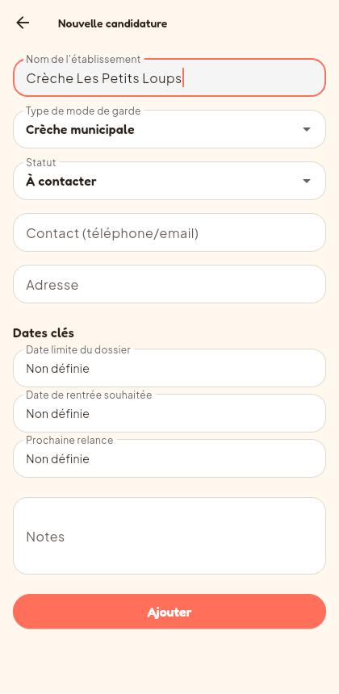
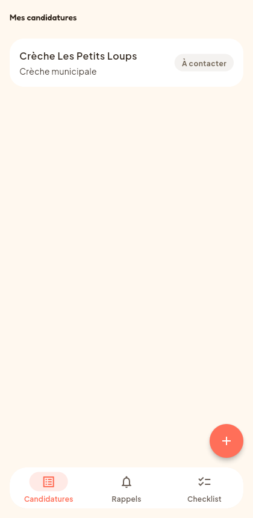
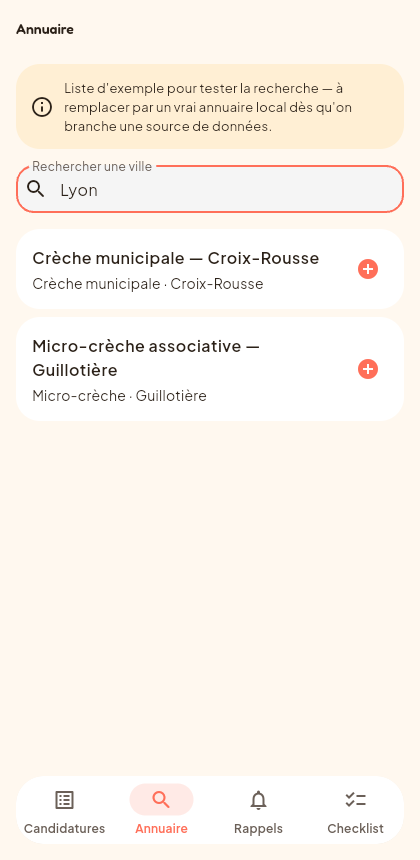
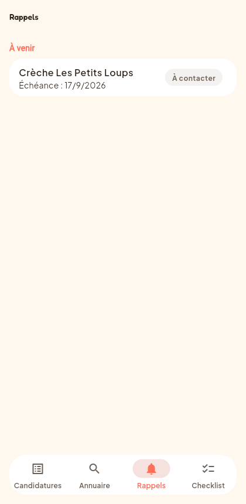

Suis, organise et ne perds plus le fil d'aucune candidature. Fini les tableurs et les post-it — tout au même endroit, 100% gratuit et privé.



Des fonctionnalités simples et pensées pour la vraie vie d'une recherche de mode de garde.
Ajoute chaque crèche ou assistante maternelle contactée, suis son statut d'un coup d'œil : à contacter, dossier envoyé, en attente, entretien, accepté ou refusé.
Dates limites de dossier, relances à faire — classées automatiquement par échéance, pour ne plus rater une fenêtre de candidature.

Toutes tes données restent sur ton téléphone. Pas de compte, pas de serveur, rien qui parte ailleurs.
Pas d'abonnement, pas de version premium cachée. Nidly est gratuit, point final.
Consulte et mets à jour tes candidatures même sans réseau.
Passe de l'annuaire à une candidature suivie en un seul geste.
Ajoute Nidly à ton écran d'accueil (iPhone et Android) — pas besoin de store.
Exporte et partage ton suivi avec l'autre parent, sans compte à créer.
Ce qui revient le plus souvent.
Oui, entièrement. Pas d'abonnement, pas de fonctionnalité cachée derrière un paywall.
Non. Nidly n'a pas de serveur : tout ce que tu saisis reste stocké localement sur ton téléphone.
Non, aucun compte n'est nécessaire. Tu ouvres l'app et tu commences directement.
Oui — Nidly fonctionne dans ton navigateur et s'installe sur l'écran d'accueil comme une vraie app, sur les deux systèmes.
Pour l'instant, l'annuaire contient une liste d'exemple pour tester la recherche par ville — elle sera remplacée par un vrai jeu de données prochainement.
Gratuit, sans compte, tes données restent sur ton téléphone.
Essayer Nidly gratuitement →